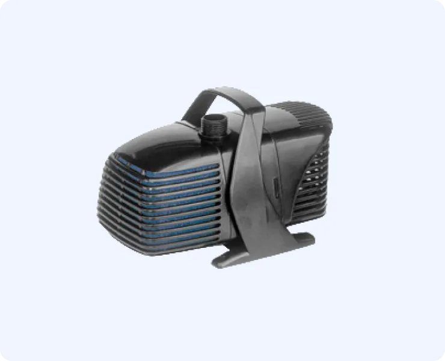

Насосы для пруда
Насос M-1200, 1260 л/час, 20 Вт, макс.напор 1.8м, с фонтан. насадками
Цена и наличие
- 1 шт.906,5 BYN / шт.В наличии
Данные на 23.11.2026.
Характеристики
- Мощность
- 20 Вт
- Производительность
- 1260 л/час
- Напор
- 1,8 м
- Тип насоса
- фонтанный
- Размеры (ДхШхВ)
- 157х89х90 мм
- Потребляемая мощность
- 20 Вт
- Максимальный расход
- 21 л/мин, 1260 л/час
- Максимальный напор
- 1,8 м
- Соединитель для шлангов
- 1/2″, 3/4″, 1″
- Напорный патрубок
- 1/2″
- Длина кабеля
- 7 м
- Страна производитель, бренд
- Китай
Описание
M 1200 - насос для пруда.
НАСОС SYSTEM M 1200, 12V, 20W, С КОМПЛЕКТОМ ФОНТАННЫХ НАСАДОК, ТЕЛЕСКОПОМ И РЕГУЛЯТОРОМ ПРОТОКА Фонтанный насос с напряжением питания 12В для подачи воды на декоративные фигурки-источники и фонтаны Особенности насоса: Безопасное напряжение питания 12В (трансформатор приобретается отдельно!) Особо прочное рабочее колесо насоса Все электрические части залиты искусственной смолой В комплекте телескопический удлинитель насадки и штуцер для шланга 13-25 мм Прост в обслуживании, не требует специальных инструментов Удобная ручка и устойчивая подставка Cинхронный двигатель с постоянным магнитом Тройник с регулировкой расхода Насос System M 1200, 12V, 20w, с комплектом фонтанных насадок, телескопом и регулятором протока